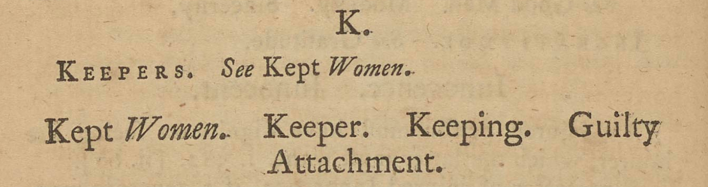

In another instance, the headings themselves act as commentary. In Grandison, for instance, those looking for “Keepers” are redirected to the section directly below, “Kept Women.”
As this redirection is obviously unnecessary for the reader, given the section on “Kept Women” directly follows it, we can presume that the redirection is doing another type of work. Purposefully naming the section as “Kept Women” might be asking the men and women who consult the book for information and advice on ‘keepers’ to instead think about the women that they keep as mistresses. The reframing of the subject through the heading itself, then, partakes in the moralizing project of the book.
{Return to Tour Table of Contents}